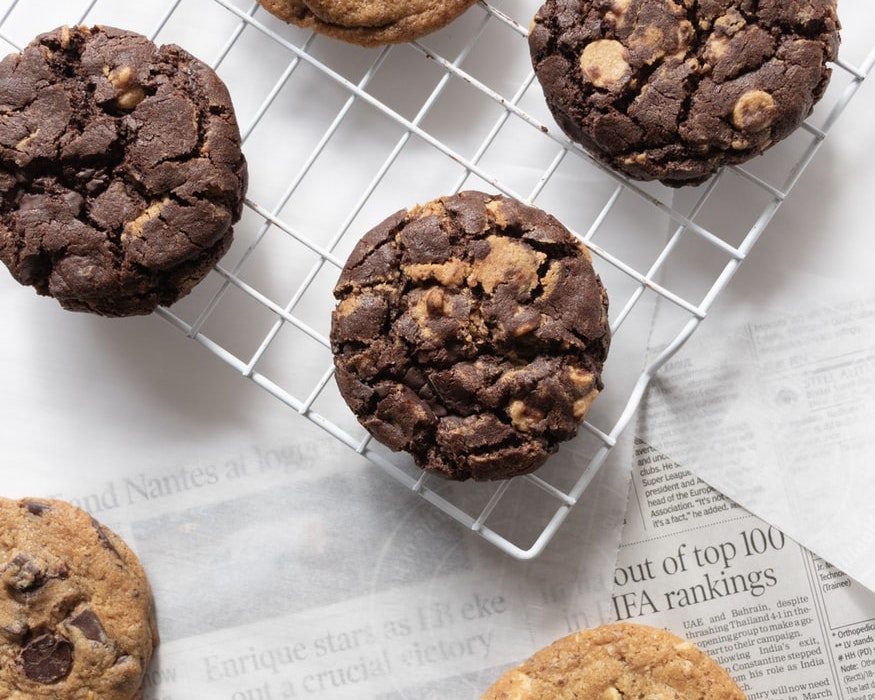

Cookies
Recipe
Donal Skehan shows you how to make cookies with a clever hack to have them any time you fancy. Freeze this chocolate chip cookie dough then simply slice and bake when you feel like making soft chocolatey cookies.
Ingredients:
- 275g unsalted butter, softened
- 275g soft light brown sugar
- 225g granulated sugar
- 2 large free-range eggs
- 1 tbsp vanilla extract
- 475g plain flour
- 2 tsp baking powder
- 300g milk chocolate, chopped roughly into chunks
- sea salt

Instructions:
- Put the butter and sugars into a large mixing bowl. Beat together with an electric hand whisk until smooth and light in colour.
- Break in the eggs one at a time, mixing as you break in each egg. Once the eggs are combined, add the vanilla extract.
- Sift in the flour and baking powder and mix in with a wooden spoon until completely incorporated. Add the chocolate chunks and mix in until thoroughly combined. Divide the dough in half.
- Place each half onto a large sheet of cling film. Roll the dough into a wide sausage shape and wrap in the cling film, twisting the ends to seal. Each sausage will make nine large cookies (but you can roll them smaller and make more). The dough sausages can be frozen at this point. However if you wish to bake them straightaway, chill the dough in the fridge for 30 minutes before use.
- Once ready to use the cookie dough, remove from the freezer and allow to warm up enough to slice. Preheat the oven to 180C/350F/Gas 4.
- Slice the dough sausage into nine discs and place onto a non-stick baking tray or a tray that has been lined with baking parchment.
- Sprinkle each cookie with a tiny pinch of salt and bake in the preheated oven for 20 minutes, or until they are golden-brown on the edge and slightly paler in the centre.
- Remove from the oven and transfer to a wire rack to cool before serving.